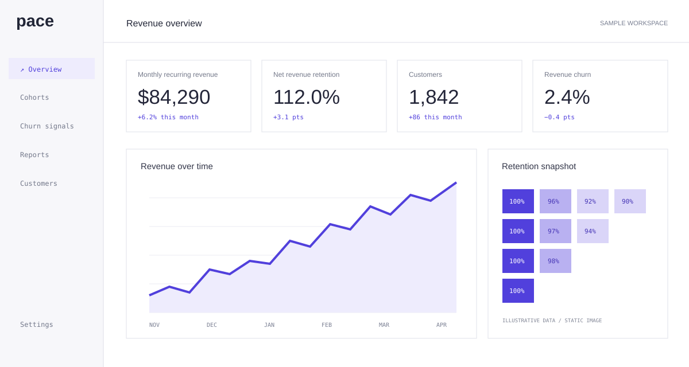

Connect Stripe
Proposed read-only access. This demonstration connects to no billing service.
REVENUE ANALYTICS FOR SUBSCRIPTION BUSINESSES
Pace turns billing data into retention, cohort and expansion metrics your whole team can read. A clearer picture of what comes next.
*Product concept claims. No verified certification, live connection or predictive guarantee. This page is a static preview.

*Illustrative metrics supplied in the brief, not independently verified.
01 / RETENTION
Cohort tables rebuild every night from your billing data. No spreadsheets, no exports, no analyst waiting on a request.
Static product illustration. Try reading a sample cohort in the guided tour.
| Cohort | M0 | M1 | M2 | M3 |
|---|---|---|---|---|
| January | 100% | 96% | 92% | 90% |
| February | 100% | 97% | 94% | — |
| March | 100% | 98% | — | — |
| April | 100% | — | — | — |
Read across a row. Each cell is a share of the starting cohort still retained.
02 / EARLY SIGNALS
The product concept brings usage, payment history and support signals together, so your team knows where to start a conversation.
Sample scores are invented, not predictions or advice about real customers.
A prioritisation aid, not a certainty. Context always matters.
03 / A CLEARER MONDAY
One Monday email with the five numbers that moved, written in sentences instead of charts.
Email layout is a static preview. No emails or Slack alerts are sent.
MONDAY, APRIL 27
MRR closed at $84,290, up 6.2%. Net revenue retention reached 112%. New business added $6,800; expansion contributed $2,120; churn was $3,700.
LESS NOISE. MORE CONTEXT.FROM BILLING TO UNDERSTANDING
Proposed read-only access. This demonstration connects to no billing service.
Four-minute setup is a concept median, not a verified processing commitment.
Unlimited seats in the product concept. This page creates no workspace.
A CUSTOMER STORY / ILLUSTRATIVE
“We cancelled two other tools the week we set Pace up. It answers the question our board actually asks, which is where the money went and why.”
DANA WHITFIELD HEAD OF GROWTH, CADENCE · CONCEPT TESTIMONIAL
CLEAR TIERS / UNLIMITED SEATS
For finding your footing.
For moving with intention.
For your next horizon.
Illustrative pricing and capabilities. No checkout, authentication or subscription is provided.
COMMON QUESTIONS
The product concept uses revocable read-only access. This page makes no Stripe connection.
The brief's median is four minutes, including backfill. This has not been measured by the demo.
Concept pricing is based on revenue, not seats. No billing takes place here.
The proposed product sends a notice before changes. This demo neither monitors MRR nor charges automatically.
Download the sample metrics CSV above. Real data export and a Scale REST API are product concepts.
The original concept describes Paddle and beta Chargebee support; neither provider is connected here.
THE NEXT MOVE IS YOURS.
A product promise to explore, not a live setup guarantee.